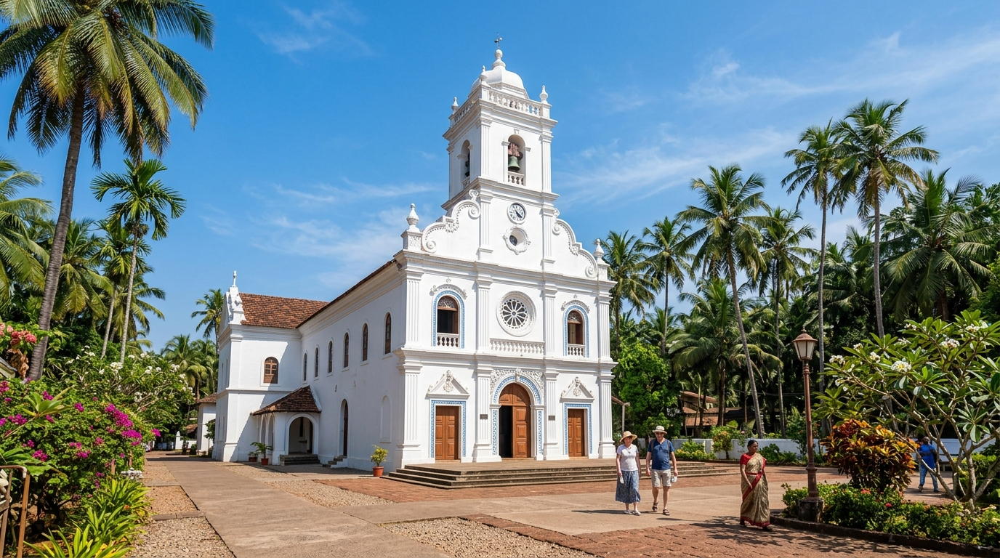
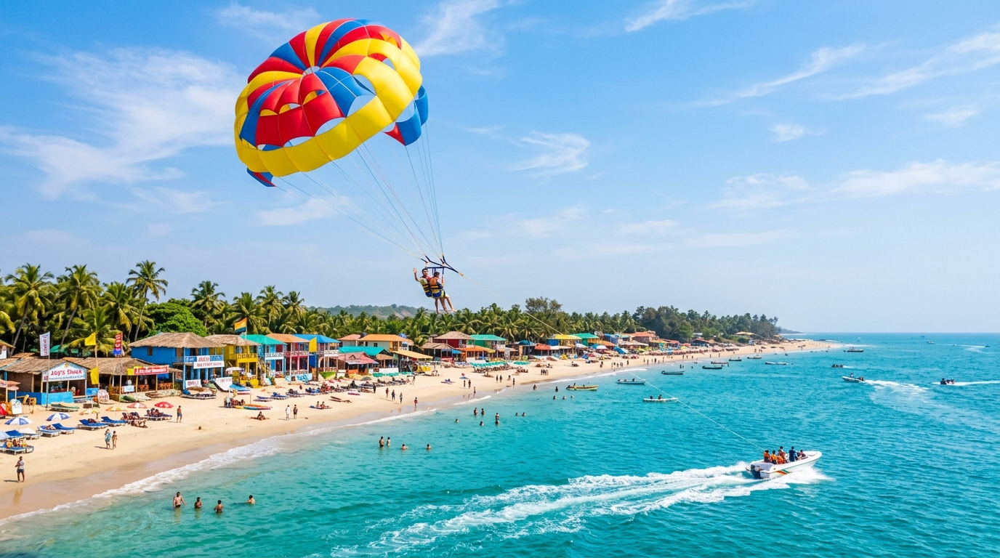
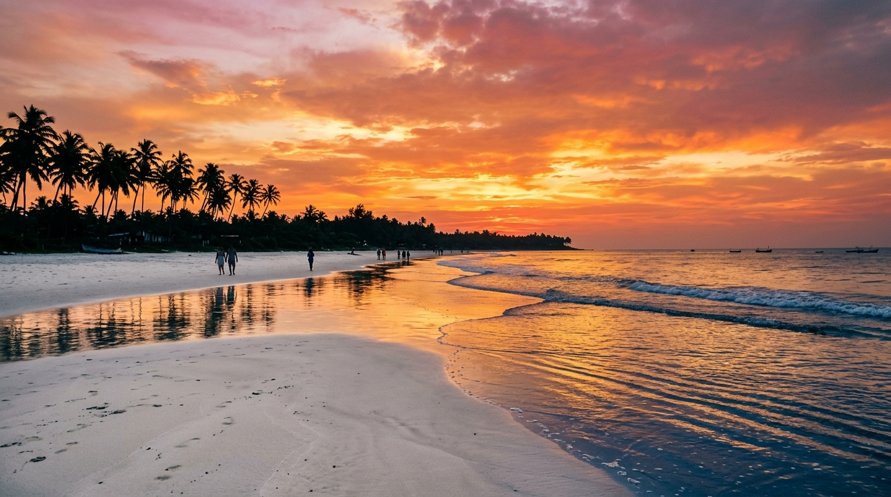

Colva Beach
South Goa's Iconic White Sand Coastline & Cultural Hub
Stretching over 24 kilometers along the Arabian Sea, Colva Beach is the jewel of South Goa's Salcete coastline. Renowned for its fine, silky white sand, coconut palm groves, and rich Goan-Portuguese cultural legacy, Colva combines lively water sports, historic churches, beachfront shacks, and tranquil coastal charm.
📍 Location & Geographical Context
Colva Beach is located in Salcete Taluka in South Goa district, approximately 8 kilometers west of Margao (the commercial capital of South Goa) and 23 kilometers south of Dabolim International Airport (GOI). It forms the central hub of a continuous 24-kilometer belt of fine white sand that extends from Bogmalo in the north to Cabo de Rama in the south.
| State & District | Goa State, South Goa District (Salcete Taluka) |
|---|---|
| Geographical Coordinates | 15.2783° N, 73.9131° E |
| Sand Texture | Silky, fine white sand with gentle sloping sea bed. |
| Coastal Belt | Central hub of the 24 km Salcete coastal strip. |
| Proximity / Transport | 8 km from Margao Railway Station, 23 km from Dabolim Airport (GOI). |
🏖️ Beach Overview
- Colonial Heritage: Colva was historically the favored summer retreat for wealthy Portuguese-Goan aristocrats who built stately mansions along the village lanes.
- Spacious & Vibrant Shoreline: Offers a lively central plaza with beach shacks, souvenirs, and water sports, flanked by quieter stretches for peaceful relaxation.
- Popular Family Destination: Its broad intertidal zone and shallow breakers make it safe for family wading and leisure strolling.
- Culinary Capital of South Goa: Famed for beachside shacks serving fresh seafood, Kingfish rava fry, prawns balchão, and traditional feni.
🌴 Coastal Landscape
- Powdery White Dunes: Rare white quartz-rich sand dunes supported by sea lavender and creepers that anchor the delicate coastal dune ecosystem.
- Fringing Coconut Palm Canopy: Dense emerald coconut groves fringe the high tide line, offering natural shade and quintessential tropical scenery.
- Gentle Ocean Swells: Moderate tides with clear turquoise waters create ideal conditions for coastal bathing during non-monsoon months.
- Colva River Creek: A small freshwater creek winds past the village bridge to merge into the sea at the main beach entrance.
🏄 Activities & Visitor Attractions
- Water Sports: Parasailing over the turquoise bay, jet-skiing, banana boat rides, and speed boat tours operated by licensed beach vendors.
- Sunset Strolling & Photography: Long evening walks along the wide white tide line to catch vibrant crimson sunsets reflecting on wet sand.
- Beach Shack Dining: Enjoy candlelit seafood dinners right on the beach, sampling fresh Goan fish curry, grilled calamari, and Bebinca.
- Dolphin Sighting Boat Trips: Early morning boat excursions venturing off the Salcete coast to spot wild dolphins.
🗺️ Nearby Points of Interest
- Church of Our Lady of Mercy (0.5 km): Founded in 1630, housing the miraculous statue of Menino Jesus (Baby Jesus).
- Benaulim Beach (2 km South): A serene continuation of the white sand belt known for calm fishing villages and dolphin watching.
- Betalbatim Beach (3 km North): Famous for quiet pine groves and rare seasonal bioluminescent sea plankton glows.
- Margao City Market & Heritage Quarter (8 km East): Browse the bustling covered spice market and view colonial Portuguese mansions.
- Majorda Beach (5 km North): Known for luxury resorts and Goan toddy-bread culinary history.
🎉 Local Highlights & Cultural Traditions
- Fama de Menino Jesus Festival (October): Colva's biggest religious festival, where thousands of pilgrims gather at the Church of Our Lady of Mercy for blessing ceremonies and a vibrant fair.
- Goan-Portuguese Architecture: Stroll through Colva village lanes lined with 19th-century Latin-style houses with tile roofs, balcões (verandahs), and shell windows.
- Fishermen's Ramponn Tradition: Watch traditional Goan fishermen pulling in their shore seines (ramponn nets) laden with fresh mackerel and sardines in early mornings.
Beaches of India Navigation Matrix
Explore premier coastal destinations across India's maritime states and review safety indicators.
Colva Beach
Vibe: White Sand, Water Sports, Heritage Church
Currently ViewingPalolem Beach
Vibe: Crescent Bay, Kayaking, Coconut Palms
Safe for SwimmingAnjuna Beach
Vibe: Rocky coast, Flea Market, Bohemian
Rocky ShorelineBaga Beach
Vibe: Water Sports, Shacks, Nightlife
Supervised SwimmingKovalam Beach
Vibe: Lighthouse Cove, Ayurvedic Resorts
Safe for SwimmingElephant Beach
Vibe: Coral Reefs, Snorkeling, Sea Walking
Supervised Water SportsColva Image Gallery & Attribution



